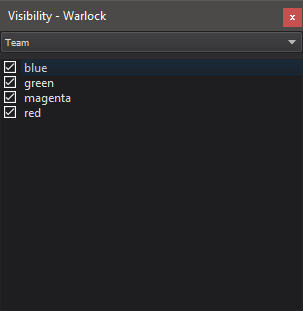
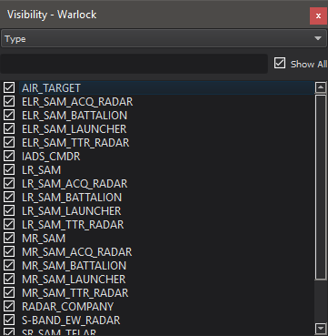

Visibility - Warlock¶
The Visibility dialog allows the user to quickly choose which teams or platform types are visible in the current scenario. The Visibility dialog, the Team Visibility preferences, and the Type Visibility preferences reflect the same visibility information and update one another when changes are made.
Team Visibility¶
Team Visibility provides a checkable list of all platform teams in the scenario. The visibility of a specified platform team is controlled by toggling its associated checkbox.
To display the dialog, enable it in the view menu under “Visibility” and then selecting “Team” from the drop down box.
On startup, Team visibility will be loaded based on the Team Visibility preferences. Unless there are previously defined settings, all platform teams are visible by default.
The Team Visibility dialog is effectively an extension of the preferences; therefore whenever one is modified, the other is changed as well.
Type Visibility¶
Type Visibility provides a checkable list of all platform types in the scenario. The visibility of a specified platform type is controlled by toggling its associated checkbox.
To display the dialog, enable it in the view menu under “Visibility” and then selecting “Type” from the drop down box.
The case-insensitive filter at the top of the visibility can be used to show only platforms containing a specific string, while the “Show All” checkbox enables or disables all platform types (including those that have been hidden by the filter). Additionally, right clicking one of the platform types brings up an option to select all platforms in the scenario with the selected type.
Note
When changing the visibility of a large number of platforms, the application may become unresponsive for a short time.
On startup, platform type visibility will be loaded based on the Type Visibility preferences. Unless there are previously defined settings, all platform types are visible by default.
The Type Visibility dialog is effectively an extension of the preferences; therefore whenever one is modified, the other is changed as well.